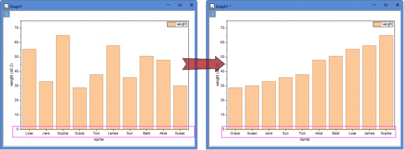

最終更新日：2026/4/14
自動XまたはテキストXを使用して縦棒グラフを作成した場合、Y値に基づいて棒を昇順または降順に並べ替えたいことがあります。 
以下のステップで操作します。
場合によっては、X軸の目盛ラベルの表示がデータセットからのテキスト ではなく 刻みインデックスの文字列 に設定されていることがあります（通常、「縦棒/横棒」テンプレートのデフォルト設定）。この場合、目盛ラベルはY値に対応しておらず、単にインデックスに基づいて表示されるため、上記の順序ドロップダウンリストを使用しても、目盛ラベルの順序は一緒に変更されません。その場合は、X軸の目盛ラベルの表示タイプを データセットからのテキスト に変更してください。
キーワード:棒の並べ替え, ソート列, 目盛ラベルの順序, 順序の変更